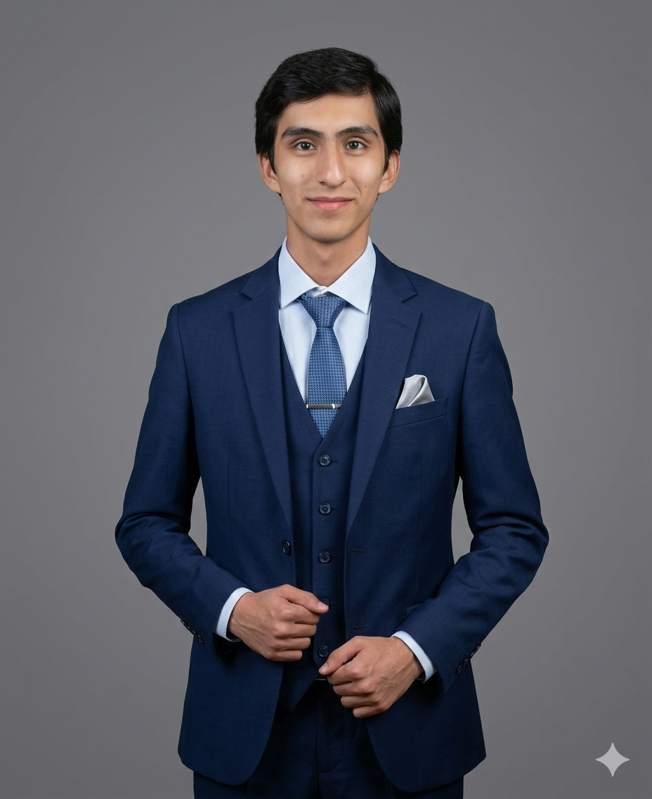

Sobre mí
Soy egresado de una de las mejores escuelas de Sucre y actualmente estudio en la Universidad del Valle (Univalle), donde continúo fortaleciendo mi formación en el área de sistemas. Me considero una persona práctica y orientada a resultados; aunque no soy estrictamente metódico, tengo facilidad para adaptarme, resolver problemas y aprender de manera autónoma mediante la experiencia.
Cuento con conocimientos en programación, bases de datos y sistemas informáticos, aplicando la lógica y el análisis para desarrollar soluciones funcionales. Me motiva aprender nuevas tecnologías y mantenerme en constante actualización, con el objetivo de crecer profesionalmente y aportar soluciones eficientes e innovadoras en cada proyecto en el que participe.
Mi objetivo es consolidarme como un profesional en ingeniería de sistemas capaz de aportar innovación, eficiencia y calidad en cada proyecto en el que participe, contribuyendo al desarrollo tecnológico y generando impacto positivo en mi entorno.
